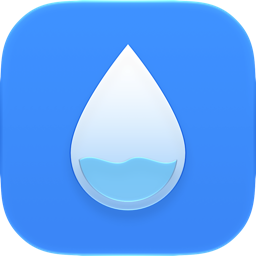

한모금 · One Sip
문의
버그 제보나 궁금한 점은 ekalsdl0225@gmail.com로 보내 주세요. 기기 모델과 iOS · watchOS 버전을 함께 적어 주시면 빠르게 확인할 수 있습니다.
자주 묻는 질문
마신 양이 실제와 다른 것 같아요.
처음에는 평균적인 한 모금 크기로 계산합니다. 메뉴 › 한 모금 보정에서 용량이 적힌 병을 한 번 비우며 모금을 세면 내 한 모금이 정해지고, 지난 기록까지 함께 고쳐집니다.
Apple Watch에 앱이 보이지 않아요.
iPhone의 Watch 앱 › 일반 › 앱 자동 설치를 켜거나, Watch 앱 아래쪽 '사용 가능한 앱'에서 한모금을 설치해 주세요.
건강 앱에 기록되지 않아요.
건강 앱 › 공유 › 앱 및 서비스 › 한모금에서 '수분' 쓰기를 허용해 주세요.
알림은 언제 오나요?
기본은 오후 12시와 오후 6시, 하루 두 번입니다. 메뉴 › 설정 › 알림 › 반복에서 1~3시간마다로 바꾸면 평소 첫 모금부터 마지막 모금 무렵까지만 알립니다. 아침 리포트는 매일 오전 8시에 옵니다. 목표를 채운 날에는 물 마시기 알림을 보내지 않습니다.
iCloud 동기화를 끄고 싶어요.
iPhone의 설정 › [이름] › iCloud › iCloud에 저장됨 › 모두 보기에서 한모금을 끄세요. 그러면 기록이 이 기기에만 남습니다.
기록을 지우고 싶어요.
메뉴 › 오늘 기록 또는 추세 › 날짜별 기록에서 밀어서 지우거나, 맨 아래 '이 날 삭제'를 누르세요.
Contact
For bug reports or questions, email ekalsdl0225@gmail.com. Including your device model and iOS · watchOS version helps a lot.
FAQ
The amount doesn’t look right.
One Sip starts with an average sip size. In Menu › Calibrate Sip, count your sips once while finishing a bottle with its volume printed on it. Your sip size is set, and past records are corrected too.
One Sip doesn’t appear on my Apple Watch.
On iPhone, open the Watch app › General and turn on Automatic App Install, or install One Sip from Available Apps at the bottom of the Watch app.
Water isn’t saved to Health.
In Health › Sharing › Apps and Services › One Sip, allow writing Water.
When do reminders arrive?
By default, twice a day at 12 PM and 6 PM. If you choose every 1 to 3 hours in Menu › Settings › Reminders › Repeat, reminders come only from your usual first sip to around your last. The Morning Report arrives at 8 AM every day. Drink Reminders stop on days you’ve met your goal.
How do I turn off iCloud sync?
On iPhone, go to Settings › [your name] › iCloud › Saved to iCloud › See All, and turn off One Sip. Your records then stay on this device only.
How do I delete records?
In Menu › Today’s Log or Trends › Daily Logs, swipe to delete, or tap Delete This Day at the bottom.
お問い合わせ
不具合の報告やご質問は ekalsdl0225@gmail.com までお送りください。デバイスの機種とiOS・watchOSのバージョンを添えていただくと助かります。
よくある質問
飲んだ量が実際と違う気がします。
最初は平均的なひと口の量で計算します。メニュー › ひと口の補正 で、容量が書かれたボトルを1本飲み切りながら口数を数えると、あなたのひと口が決まり、これまでの記録もまとめて修正されます。
Apple Watchにアプリが表示されません。
iPhoneのWatch App › 一般 で「Appを自動インストール」をオンにするか、Watch Appの下の「利用可能なApp」からひと口をインストールしてください。
ヘルスケアに記録されません。
ヘルスケア › 共有 › Appとサービス › ひと口 で「水分」の書き込みを許可してください。
通知はいつ届きますか?
初期設定では午後0時と午後6時の1日2回です。メニュー › 設定 › 通知 › 繰り返し で1〜3時間ごとにすると、いつもの最初のひと口から最後のひと口のころまでだけ通知します。朝のレポートは毎日午前8時に届きます。目標を達成した日は水分補給の通知を送りません。
iCloudの同期をオフにしたいです。
iPhoneの 設定 › [ユーザ名] › iCloud › iCloudに保存済み › すべてを表示 で、ひと口をオフにしてください。記録はこのデバイスにだけ残ります。
联系我们
如需报告问题或咨询,请发送邮件至 ekalsdl0225@gmail.com。附上设备型号和 iOS · watchOS 版本有助于我们更快处理。
常见问题
记录的饮水量好像不准确。
一开始会按平均的一口大小计算。在 菜单 › 校准一口 中,喝完一瓶标有容量的水时数一下口数,就能确定你的一口大小,之前的记录也会一起修正。
Apple Watch 上看不到 App。
在 iPhone 的 Watch App › 通用 中打开“自动安装 App”,或在 Watch App 底部的“可用 App”中安装一口。
没有写入“健康”。
请在“健康” › 共享 › App 和服务 › 一口中允许写入饮水数据。
提醒什么时候来?
默认每天两次,在中午 12 点和下午 6 点。在 菜单 › 设置 › 提醒 › 重复 中改为每 1～3 小时后,只会在你平时第一口到最后一口前后提醒。早间报告每天上午 8 点送达。达成目标的日子不会发送喝水提醒。
想关闭 iCloud 同步。
在 iPhone 的 设置 › [你的名字] › iCloud › 已存储到 iCloud › 显示全部 中关闭一口。记录将只保存在这台设备上。
聯絡我們
如需回報問題或詢問,請寄信至 ekalsdl0225@gmail.com。附上裝置型號和 iOS · watchOS 版本有助於我們更快處理。
常見問題
記錄的飲水量好像不準確。
一開始會按平均的一口大小計算。在 選單 › 校準一口 中,喝完一瓶標有容量的水時數一下口數,就能確定你的一口大小,之前的記錄也會一起修正。
Apple Watch 上看不到 App。
在 iPhone 的 Watch App › 一般 中開啟「自動安裝 App」,或在 Watch App 底部的「可用的 App」中安裝一口。
沒有寫入「健康」。
請在「健康」› 分享 › App 與服務 › 一口中允許寫入飲水資料。
提醒什麼時候來?
預設每天兩次,在中午 12 點和下午 6 點。在 選單 › 設定 › 提醒 › 重複 中改為每 1～3 小時後,只會在你平時第一口到最後一口前後提醒。早間報告每天上午 8 點送達。達成目標的日子不會傳送喝水提醒。
想關閉 iCloud 同步。
在 iPhone 的 設定 › [你的名稱] › iCloud › 已儲存至 iCloud › 顯示全部 中關閉一口。紀錄將只保存在這台裝置上。
Contacto
Para informar de errores o hacer preguntas, escribe a ekalsdl0225@gmail.com. Indicar el modelo del dispositivo y la versión de iOS · watchOS nos ayuda mucho.
Preguntas frecuentes
La cantidad no parece correcta.
Un Sorbo empieza con un tamaño de sorbo medio. En Menú › Calibrar sorbo, cuenta tus sorbos una vez mientras terminas una botella con la capacidad impresa. Se fija el tamaño de tu sorbo y también se corrigen los registros anteriores.
Un Sorbo no aparece en mi Apple Watch.
En el iPhone, abre la app Watch › General y activa la instalación automática de apps, o instala Un Sorbo desde Apps disponibles, al final de la app Watch.
El agua no se guarda en Salud.
En Salud › Compartir › Apps y servicios › Un Sorbo, permite escribir Agua.
¿Cuándo llegan los recordatorios?
Por defecto, dos veces al día, a las 12:00 y a las 18:00. Si eliges cada 1 a 3 horas en Menú › Ajustes › Recordatorios › Repetir, solo llegan desde tu primer sorbo habitual hasta cerca del último. El informe matutino llega cada día a las 8:00. Los recordatorios para beber se detienen los días en que cumples tu objetivo.
¿Cómo desactivo la sincronización con iCloud?
En el iPhone, ve a Ajustes › [tu nombre] › iCloud › Guardado en iCloud › Ver todo y desactiva Un Sorbo. Tus registros se quedarán solo en este dispositivo.
¿Cómo elimino registros?
En Menú › Registro de hoy o Tendencias › Registros diarios, desliza para eliminar o toca Eliminar este día al final.
Kontakt
Fehlerberichte und Fragen bitte an ekalsdl0225@gmail.com. Gerätemodell und iOS- · watchOS-Version helfen uns sehr.
Häufige Fragen
Die Menge scheint nicht zu stimmen.
Ein Schluck beginnt mit einer durchschnittlichen Schluckgröße. Zähle unter Menü › Schluck kalibrieren einmal deine Schlucke, während du eine Flasche mit aufgedruckter Füllmenge leerst. Dann ist deine Schluckgröße festgelegt, und auch frühere Einträge werden korrigiert.
Ein Schluck erscheint nicht auf meiner Apple Watch.
Öffne auf dem iPhone die Watch-App › Allgemein und aktiviere die automatische App-Installation, oder installiere Ein Schluck unten in der Watch-App unter „Verfügbare Apps“.
Wasser wird nicht in Health gesichert.
Erlaube unter Health › Teilen › Apps und Dienste › Ein Schluck das Schreiben von „Wasser“.
Wann kommen Erinnerungen?
Standardmäßig zweimal täglich um 12 und 18 Uhr. Wählst du unter Menü › Einstellungen › Erinnerungen › Wiederholen „alle 1 bis 3 Stunden“, kommen sie nur von deinem üblichen ersten bis etwa zum letzten Schluck. Der Morgenbericht kommt jeden Tag um 8 Uhr. An Tagen, an denen du dein Ziel erreicht hast, entfallen die Trinkerinnerungen.
Wie schalte ich die iCloud-Synchronisierung aus?
Öffne auf dem iPhone Einstellungen › [Dein Name] › iCloud › In iCloud gesichert › Alle anzeigen und schalte Ein Schluck aus. Deine Einträge bleiben dann nur auf diesem Gerät.
Wie lösche ich Einträge?
Wische unter Menü › Heutiges Protokoll oder Trends › Tagesprotokolle zum Löschen, oder tippe ganz unten auf „Diesen Tag löschen“.
Contact
Pour signaler un bug ou poser une question, écrivez à ekalsdl0225@gmail.com. Indiquer le modèle de l’appareil et la version d’iOS · watchOS nous aide beaucoup.
Questions fréquentes
La quantité ne semble pas juste.
Une Gorgée part d’une taille de gorgée moyenne. Dans Menu › Étalonner la gorgée, comptez vos gorgées une fois en finissant une bouteille dont la contenance est indiquée. La taille de votre gorgée est alors fixée et vos anciens enregistrements sont corrigés.
Une Gorgée n’apparaît pas sur mon Apple Watch.
Sur l’iPhone, ouvrez l’app Watch › Général et activez l’installation automatique des apps, ou installez Une Gorgée depuis Apps disponibles, en bas de l’app Watch.
L’eau n’est pas enregistrée dans Santé.
Dans Santé › Partage › Apps et services › Une Gorgée, autorisez l’écriture d’Eau.
Quand les rappels arrivent-ils ?
Par défaut, deux fois par jour, à 12 h et à 18 h. Si vous choisissez toutes les 1 à 3 heures dans Menu › Réglages › Rappels › Répéter, ils n’arrivent que de votre première gorgée habituelle jusqu’aux alentours de la dernière. Le rapport du matin arrive chaque jour à 8 h. Les rappels pour boire s’arrêtent les jours où l’objectif est atteint.
Comment désactiver la synchronisation iCloud ?
Sur l’iPhone, allez dans Réglages › [votre nom] › iCloud › Enregistré dans iCloud › Tout afficher et désactivez Une Gorgée. Vos enregistrements restent alors uniquement sur cet appareil.
Comment supprimer des enregistrements ?
Dans Menu › Historique du jour ou Tendances › Historique quotidien, balayez pour supprimer, ou touchez Supprimer ce jour en bas.
Contato
Para relatar bugs ou tirar dúvidas, escreva para ekalsdl0225@gmail.com. Informar o modelo do aparelho e a versão do iOS · watchOS ajuda muito.
Perguntas frequentes
A quantidade não parece certa.
O Um Gole começa com um tamanho de gole médio. Em Menu › Calibrar gole, conte seus goles uma vez enquanto termina uma garrafa com o volume impresso. O tamanho do seu gole é definido e os registros anteriores também são corrigidos.
O Um Gole não aparece no meu Apple Watch.
No iPhone, abra o app Watch › Geral e ative a Instalação Automática de Apps, ou instale o Um Gole em Apps Disponíveis, no fim do app Watch.
A água não é salva no Saúde.
Em Saúde › Compartilhamento › Apps e Serviços › Um Gole, permita gravar Água.
Quando chegam os lembretes?
Por padrão, duas vezes ao dia, às 12h e às 18h. Se você escolher a cada 1 a 3 horas em Menu › Ajustes › Lembretes › Repetir, eles chegam só do seu primeiro gole habitual até perto do último. O relatório matinal chega todo dia às 8h. Os lembretes para beber param nos dias em que você bate a meta.
Como desativo a sincronização com o iCloud?
No iPhone, vá em Ajustes › [seu nome] › iCloud › Salvo no iCloud › Ver Tudo e desative o Um Gole. Seus registros ficarão só neste aparelho.
Como apago registros?
Em Menu › Registro de hoje ou Tendências › Registros diários, deslize para apagar ou toque em Apagar este dia no fim.